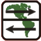
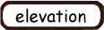
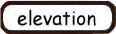

Peru


 

Northern Peru[26. June 2008] Coming from the Ecuadorian Andes to Northern Peru is like coming from the Swiss Alps through Ticino to the Po plain in Italy. The countryside changes from green and hilly to dry and flat. Unfortunately some other unpleasant characteristics that the Po plain is famous for are quite the same here in Northern Peru. Dirt, crappy houses and desperation were screaming at us from all sides. We were mentally not prepared for this change. We thought Peru is like Ecuador and now we had to realize that we just jumped over the largest cultural gap since we crossed the boarder to Mexico! What words should we use? Desolate? Bleak? Terrible! Not only the countryside but the people too were a shock for us. While they were looking at us astonished before, they now either show off their incredible knowledge in English by shouting “Gringo” or “Mister” or start laughing like pubescent kids. Others shout “Hola” and if we don’t respond they shout again and again, in a more and more demanding tone as if we have to answer them. If we stop in a city they immediately surround us, like a swarm of wasps. They even run to come to see us faster! Of course not all people here are like this. We can clearly distinguish between “people with a job” who friendly say hello, wave to us, send a smile, and the “people from the street”. These are drivers of Mototaxis, a kind of motorbike taxi, street vendors and people whose life consists of just hanging out on the street. Their whole life they must have been doing this. For sure they did not pick up too much at school and then started with what they do now. Their lack of perspective and the living together with people alike turned them into what they are now, forever pubescent. The expert would probably diagnose: serious mass infection of ADHD (attention deficit hyperactivity disorder). So we didn’t like it. And there was more to come. Pius started having problems with his stomach culminating in a very nice scene: after cycling into Chiclayo with the last power and going to the Casa de Ciclistas, all he could do was lying down on this air mattress and wait. He is not used to such situations and usually tries to avoid throwing up if possible. When he still decided he could not hold things back anymore he didn’t make it further than two meters. Things came off in the middle of the room, right by Stefan’s air mattress. Enough? No. After cleaning the (remarkable) brown sauce, the toilet didn’t want to flush anymore and the bathroom was slowly flooded… It was only minutes later that the mystery of the suddenly stuck toilet was unraveled: the cleaning rag was missing. Yes, it was brown, very well camouflaged. Two days were left to Trujillo, the big goal, the place of our dreams. In the Casa de Ciclistas of this major Peruvian city we would leave our bikes for a month and head back to Ecuador by bus to travel with our girlfriends. The two days along the bleak sand desert would have been standard racing program but Pius’ health and the headwind turned them into a last big hurdle on our way to holidays. Kilometers didn’t want to pass; the mood was as grim as the landscape and the cloudy weather. For four days Pius wasn’t able to ingest and his power was fading. The last day he rode almost everything in the wind shade of Stefan. Thank you! Arriving at the Casa de Ciclistas in Trujillo not only meant holidays for us but also meeting other bikers, talking with them till late in the night and watch football together. There were ten cyclists at the place; people from Belgium, Chile, Colombia, Germany and Switzerland. It was a relief to be among people who just understood us, did not look at us like we were aliens. Now we are heading back to Ecuador by bus to meet our girlfriends. Holidays we come, see you later! Cañon del Pato[3. August 2008] Lucho from the Casa de Ciclistas in Trujillo welcomed us happily as he urgently needed helpers for the children bike race he organized this day. Instead of doing a new internet update (now you see why it took us so long) we became timekeepers and maid-of-honor at the award ceremony after the kids had finished racing around a small park in the middle of Trujillo. 28th of July, 1 pm, time to ride again. After a gentle 85 last kilometers on the Panamericana we said good bye to asphalt and from then on the road became worse and worse. For good luck the ride into the mountains was breathtaking and we soon left the fog of the coast to ride under a blue sky from then on. How else could we have borne something like this: average speed 7.5 km/h, more than seven hours for 56 kilometers? Pius did not appreciate it. In the night after this hard day he visited the bathroom for eight times, the day after he lay in bed with fever. Two more days were to go to Huaraz, the next big town on our way. Again Pius was riding his bike without any power, fighting for every kilometer, not enjoying it at all. On the second day his patience and motivation was used up. After 50 kilometers of struggling uphill he could not ride anymore and loaded his bike on a truck for the last 20 kilometers to Huaraz. For the third time since Colombia Pius has serious problems with his stomach even though we are more or less eating the same things. A new theory sprung up in our minds: it is always after a very exhausting day that Pius gets his problems. Stefan has a friend who once had the same problems and in that case the verdict was: ameba! So Pius went to the doctor in Huaraz and explained the problem. An analysis of Pius’ inner life would have taken several days but the doctor meant there was a waaay better and easier solution: just take a pill against everything that could be possible! Usually Pius would not just take such strong medicaments but now he was just sick of it all and wanted it to be over. So there he goes: four huge pills of somethingsomething, each 500 mg, all at once. This was yesterday evening and still he has this strange taste in his mouth… At the moment things are good again. Stomach all right, hunger coming back and a meeting with Andrea tonight on the agenda. Let’s keep the fingers crossed for the next days, another hard ride on gravel roads through the Peruvian mountains. click here to see the photosA new Peru[17. August 2008] Well recovered we left Huaraz. The climbing continued for two more days rose higher up into the Andes until we passed our highest point at 4884 meters. From the coast to this point we were only climbing now, cero to four-eight, one way. For four days we were riding on unpaved roads again. On one hand this demanded a lot of patience of us; on the other hand we had the chance to ride roads where hardly anyone ever goes, especially no tourists. One night we camped on a beautiful plateau on 4230 meters, surrounded by impressive snowy mountains. Temperatures dropped fast after the sun went down – time for us to test our new warm clothes and to soon disappear in the tents and the warm sleeping bags. In these remote areas of the Andes we were able to learn to know a totally different Peru. The negative impression we had of northern Peru does not apply up here. People greet us with a smile, shout their “Gringo, Gringo!” in a positive and friendly way. They are usually very excited to see some white skins, no hate or distrust ever crosses their minds. Wherever we ask for permission to set up our tent, the answer is for sure positive. They do not know what suspicion is. Of course there are some odd things up here too. We Gringos are walking teller machines to some of them. Too many kids ask us for a little present, a candy or just for money – sometimes in a tone as if we were supposed to give them something. As we come from paradise, people sometimes want to come there with us. Many times were we offered to take daughters with us, even some boys recommended their sisters to us! These are of course jokes, but behind many jokes hides a bitter taste of reality. The clash of civilizations also becomes apparent in the new supermarkets. Interior and technique of these giant stores are state of the art; they shine in a sparkling light and attract all kinds of people – the ones who can afford the expensive goods and the ones who just come to dream of a better life. But then the staff is not ready for the new system too. A good example: we bought four beers. Cost of the beers is around 11 Soles, the deposit for the bottles is 20 Soles! After a steeplechase through the customer service we are explained that this is the supermarkets policy and we can return the bottles here, but only together with the receipt and only within five days (!). Who the hell invents such stupid rules? This is not the end of the story yet. Two days later we go to bring back the bottles at the customer service. It takes three employees to work out the complicated system of the computer that prints out the tickets for the money refund. We take it with a smile. Later at the till we hand the young gentleman the tickets so that he can scan them with the super modern laser system. But he hesitates. “You don’t buy new beers?” For him it is completely logical that he can only scan these tickets for new beer bottles. Our questions like: “How can anyone ever stop buying beer here like that?” do not seem to reach his brain. He needs assistance from the customer service. The polite lady who comes to help him is not sure about the case. She in vain consults her colleagues at the info desk. So she calls her boss. The boss seems to be one of the thinking ones. After a while she returns to us, mumbles some excuses and tells the boy how to return the money to us – of course only if we purchase goods for this value… Peru is some 50 to 100 years back in time. This is not generally a disadvantage, but it does not work well together with the modern world. The last day on unpaved roads looked good on the paper: 30 km uphill, 60 km pure downhill. But then the road was bad and turning worse; in the end it consisted of stones the size of a fist only. Sometimes there was a small sandy strip besides the road that was better to cycle on. When we took the chance to avoid the bumps like this once again and Pius was riding in front, he suddenly saw people jumping off the truck passing them. They shouted in horror and ran towards the back of Pius’ bike. When he turned around to see what happened he realized that Stefan was gone! He had been there some seconds ago, right behind him, and now he disappeared. On the right side of the narrow sandy strip we were riding on there was only an even narrower grass strip and then – nothing, void, a slope nearly vertical. Stefan later explained that the bike would have stayed on the road after he slipped on a sand spot, but he dragged it after him with his click pedals. Unfortunately Pius was not able to watch the spectacle but it must have looked impressive. Aiming between a tree and a rock (thank you guardian angel!), Stefan performed a somersault together with his bike. Somehow during the fall the bike hit his head – another confirmation for our helmet-always-policy. This would have been a road where we could have said cycling without a helmet is ok as there is hardly any traffic and we ride very slowly. Many bikers still act like that… Somehow Stefan came to a stop some ten meters lower and realized how lucky he had been: he only bit his lip, he and the bike were completely fine. After a towing action we soon continued riding the sand strips. As the road turned even worse on the downhill, we started realizing that it would take us far longer than planned to get to Huanunco, the city where pavement starts again and we planned to have a rest day. For four hours we jolted downhill, grinding down our brake pads to the metal. When the light disappeared and riding was not possible anymore, there were still 20 km to our goal missing. Mentally totally exhausted we did not at all want to set up our tents and continue the day after. We wanted nice food, a clean hotel room, a beer to celebrate the end of the unpaved roads, party, fun… We stopped a pickup truck and got a ride for the last part towards the city – a ride which was even harder than riding the stretch by bike. The truck shook so hard we had problems holding our bikes tight so they didn’t jump around which could have resulted in some broken parts. After a very relaxing rest day we were top motivated and happy to be rolling on pavement again. There was a plan in our minds and we had a special motivation to carry it out: Cerro del Pasco it 120 km away from Huanunco; 120 km pure uphill, 2300 meters higher. A crazy idea, something to do in two days, if there only was a hotel with TV on the way… There was a good movie on TV this evening and additionally we felt like doing something crazy. When we finished lunch at two and had already done 70 km and 1000 meters of altitude we realized that it would be possible to do the whole stretch. We continued cycling uphill on quite a high speed and calculated an arrival shortly before sunset. But we forgot one factor in the calculation: had we cycled up to over 4800 meters before without any altitude problems we now felt the height earlier because we were cycling a lot faster. The pass we had to cross to reach the town is on 4411 meters and we started having trouble with the altitude some hundred meters below. We could not cycle our estimated speed and Stefan even got sick while riding. Like in delirium we cycled for over one hour in the dark, the cars shooting past us and seeing us only some meters before they passed by. The legs started hurting some three hours before we arrived but in the end they just pedaled and pedaled, nothing mattered anymore. When we reached the pass we did not have energy and time to celebrate for long. It was too cold anyway and there was a movie waiting for us… On the short downhill into the city we got so cold we could hardly steer our bikes anymore. The body was shaking, our teeth were chattering with cold. There was not much time left to find a hotel room, check the TV stations, go get some take away food around the corner and – realize that the movie was at eight, but at eight in Argentina where the channel is from, three hours earlier than here… The smile on our face when we lay in our beds and fell asleep within some seconds is a good sign that this power day wasn’t really about the movie :-) 9.5 hours on the bike, 121 km and an altitude gain of 2670 meters are something we won’t do so often again. For breakfast we were recommended to go to a restaurant at “the other end of the hole”. “The hole” is the huge mine, the reason why Cerro del Pasco exists. Why else would someone want to live up in this freezing height? It took us half an hour to walk around half the hole. Several hundred meters deep and with a diameter of some kilometers the huge trucks working on the bottom looked like toys. Mines are everywhere here; the road is full of trucks transporting excavators, huge tires and other equipment. Stefan joins the S-club[17. August 2008] One night later history repeated itself in a most unwelcome way. Pius went to the bathroom several times. As an absolute novelty since Mexico, Stefan also joined the S-club some hours later. Again we were without power and again we still had to continue cycling as people were waiting for us in Huancayo. With our last power we made it to La Oroya, another mining town. La Oroya is even worse than Cerro del Pasco. It is said to be one of the ten most contaminated cities in the world… 99 percent of children have a too high lead content in their blood. We could experience the terrible conditions first hand: when we cycled past the huge treatment plant our gorges and noses started hurting. Stefan had to use his Asthma spray for the first time on the trip! Terrible! The second day we felt a little better and could make it to Huancayo on time. As usual the good phase was soon followed by a bad one, then it was a little better, then bad again… The time we did not spend on the toilet or in bed (the bigger part for good luck) we enjoyed being with Andrea and Andrew again. We are staying at the house of Sergio and Marjorie, the founders of the school where Andrea and Andrew used to work. We visited the school, were invited by friends to a traditional meal (feast!), strolled through the endless markets of the town or simply enjoyed the big TV and the DVD collection of the house. This morning Andrea, Andrew and Sergio left for Lima. Andrea is going back to Switzerland after one year in South America, Andrew meets his parents who came for a visit and Sergio will lead a tourist group through Peru for two weeks. So there are three left, two of which are not ready to cycle yet. A first analysis in a (cheap) laboratory did not show any signs of Ameba or other parasites. A second analysis in a very good and expensive clinic resulted in the same verdict: we do not have anything! We were explained by the doctor that the Andes of Peru and Bolivia are different than any other place in South America concerning food contamination. We see how true it is: of the many cyclists we know, most had or have the same problems, always in the same region. Our future receipt will be cooking for ourselves more often, take ZERO risk with any food we buy in restaurants or on the street. Good bye delicious fruit juices! click here to see the photos for the Huaraz to Huancayo sectionCarretera de la Sierra - Huancayo to Cusco[7. Sept 2008] “Horror section”, “Hardest part of the tour” or “You will suffer, suffer a lot!” These were the comments we heard about what was waiting for us between Huancayo and Cusco. Over 400 kilometers of unpaved roads, regular climbs up to 4000 meters and downhills back to 2000 meters. The first four days to Ayacucho and the day off in this beautiful city were a welcome warm up and good for mental preparation for the following stretch. Our stomachs were fine after all and we felt ready to do the job. After the bad experiences of the past weeks Pius decided to try a zero-tolerance-policy concerning food for the time to Cusco: only cooked, hot food in restaurants, better even food cooked by ourselves. Stefan was not as alerted as Pius and risked a hamburger while Pius went for pizza one evening. He paid dear for his decision: the following night he visited the bathroom regularly and the ride to Ayacucho became a long and hard fight for him. Additionally to his bad luck with food Stefan had to get over his second accident in the last weeks. This time it was not the sand that made him slip but the excessive speed he uses to ride on and a wind gust that brought him out of balance. Again he himself was fine after the crash, but the panniers on his right side are not waterproof now anymore... Let's just hope this experience makes him decide to live his need for speed somewhere else from now on! Instead of shouting and worrying about the bad roads, longing for the end of the unpaved stretches and hurrying to get through that hard part as fast as possible, we completely enjoyed the following days. We had a new way of looking at things: we decided not to hurry at all, come what want. We did 50 and 60 kilometers per day only, camped in the wild instead of making it to the next town before dawn and cooked our own food nearly always. This way we spent nights amidst the beautiful nature we were riding through. Temperatures fell very low (-11 ?C) during the nights we were camping above 4000 meters, but the sunsets and sunrises on the high plateaus were absolutely worth the freezing. Instead of going through hell we spent some of the best days on our whole trip! The hard roads were hard for us to ride too, but as we later realized when we rent mountain bikes in Cusco it is more comfortable to ride unpaved roads too with recumbents than with normal bikes. The danger of falling after slipping on a sandy spot is a little higher but falling is not too bad as we don’t fall very high :-) The bikes suffered on the bad roads though. After one of the 2000 meter downhills Stefan heard a strange noise in the back of his bike. It turned out to be the bolt of the suspension element that came loose. The thread was partially destroyed and came loose again after we tightened it as good as we could. What to do? Use the bolt lock we are carrying with us since Alaska! Some bikers had already made fun of us because we carry such things with us. These bikers would have had to take a bus at this point… The road between Ayacucho and Abancay is famous among bike travelers. Locals told us they see more tourists on bikes than “normal” tourists! No wonder we met other cyclists. It was nice to chat with the bikers coming from the other side, exchanging information, tell the latest stories… One day we met a French biker who was riding in the same direction as we. Laurent is on the way from Quito to Ushuaia, with more or less the same schedule as we are. We rode some days together and it turned out to be a good deal for him. He had the stomach problems we avoided successfully and we were of help to him sometimes by cooking tea when he fell to bed like a stone after the hard days of riding. He did an terrific job following us in this state! Shortly before Abancay we hit pavement again; an incredible feeling of rolling, like flying. The pavement made the missing two days to Cusco easier but still there were some hard mountains to climb. Our bodies were tired from the hard days of the last week and we were mentally not ready anymore. In our thoughts we were in Cusco already. click here to see the photosCusco[7. Sept 2008] Cusco, we are in Cusco! After we climbed the last hill and saw over the city for the first time, we congratulated ourselves for having passed “the mountains”. The times of endless climbs on terrible roads are over, the Altiplano, Argentina and Chile with plenty of pavement are waiting for us. Additionally from now on the stretches between large cities and points of interest will be shorter – a lot of action to come! We had tried to find couchsurfers in Cusco which is not very easy. Thousands of backpackers come here every day; couchsurfers usually get drowned by requests. One guy could host us but only some days after our arrival. Another contact that accepted hosting us was one with a completely empty profile, the ones we usually don’t even ask. In this case we decided to give it a try. So we went to this house, had no idea what was waiting for us and – were super positively surprised! Veronica and her family welcomed us very warmly and showed us to our own room. We are the first couchsurfers at this house and we hope the impression we left was good enough so Couchsurfing can go on here. We cooked Swiss food for the family, they cooked Peruvian specialties for us in return. We had interesting talks and were delighted by the mix of typical Peruvian hospitality and the sophisticated background that can not be found in many families around here. Another perfect Couchsurfing experience! Our days in Cusco were not filled with sightseeing as one could expect, no, we spent most of our time in internet cafes! Since Panama we did not find time to update our elevation profiles. Additionally we wanted to give our profiles section on the homepage a facelift. The result and the very interesting elevation profiles of our Andes crossing can be found here Still we saw the beauty of Cusco on many occasions. When we went to bring our clothes to the laundry, were looking for a bike shop or went for a beer in the evening with Veronica and Harry, we always were walking through beautiful alleyways, crossed stunning plazas and passed by beautifully restored colonial houses. Usually we would be annoyed by the ubiquity of tourism though. At every corner someone wants to sell us something, tries to convince us to come to his restaurant or for sure has the best hostel to offer. But as we were cycling through areas with hardly any people or Peruvian farmers only during the past weeks, we are quite happy now to have all these gringos, discotheques and noble restaurants around us. As we had another Couchsurfing invitation and did not want to stress the hospitality of our host family too much, we changed the location after four days. Harry, our new host, was as perfect as the previous one. He is a very experienced Couchsurfing host and surfing his couch was more like visiting a friend than being invited to some house in Peru. From the first second we felt like at home at his cozy house. Thank you Harry, thank you Veronica and family, we appreciated the hospitality very much and had a great time in Cusco! click here to see the photosMachupicchu[7. Sept 2008] For our visit to Machupicchu, the famous Inka village up in the mountains, we worked out a special plan. As the only official way to get there is by train and the prices are ridiculously high, we tried to avoid this tourist trap and get there by bike. We can tell you in advance: it was not a good idea! Well, it was quite adventurous and will be a nice memory but it was definitely not the easy way to do it. In Cusco we checked some bike shops to rent mountain bikes. The first thing went wrong here. We thought we had made a good choice and rented reasonable bikes for a good price but soon we realized that the suspension forks were not working properly. Many tour operators confirmed what we read in our guidebook: there is a path besides the railway from Ollantaytambo to Aguascalientes, close to Machupicchu. True, there was a path, for the first half of the 45 kilometers – then we had to ride for hours on the bumpy railway tracks. Without working suspension forks this was very hard, especially for our hands, who were full of bruises and blisters after the terrible ride. At one point we even were stopped by a security guard who told us that the access to the Machupicchu area is prohibited by bike. We were of course not in the mood to just turn around and go back to Cusco again. So we went “around” the stubborn guy in a large detour through fields, forests and a steep sandy gorge. We still made it to Aguascalientes before darkness and went to bed early: the ride up to Machupicchu was waiting in the morning at five. Arriving on top after a beautiful ride up we did not find a place to leave the bikes. So we decided to hide them in the bush and locked them on a tree with our bike locks. Between the many things that went wrong, our visit to Machupicchu was a terrific highlight and it was worth the stresses and strains absolutely. We avoided the rip-off prices (over 40 Dollars per person!) with our faked student cards and then had a great time in this mystic area. Our usual lack of interest for churches and old stones was blown away by the setting of this old city and the mountain scenery around it. After the hard ride on the railway tracks we had decided to ride back by train. The excessive prices hurt but our hands hurt even more... After the nice time in the ruins we wanted to get our bikes, fly down the hill and take the train that we had booked already. But to our very big surprise the bikes were gone! No, our bike locks are too strong to be cut, but someone had cut the tree off that our bikes were fixed to! We soon realized that the bikes still had to be close as the only way down from Machupicchu is in the tourist busses that for sure did not transport the bikes. We went to the local tourist office and the friendly lady there seemed to have found a trace after some phone calls. She sent us to the restaurant close to the spot where we had hidden our bikes and told us to ask for “Rossel”. At the restaurant Rossel was eating together with some other employees of Machupicchu. When we asked whether someone knew something about the bikes we suddenly felt that we were in the right place. Nobody was able to give us an answer but evidentially everybody knew what we wanted to know! Rossel came to the tourist office with us. He first disappeared with the friendly lady from the desk – a loud discussion in the background followed. Only after several more discussions with other employees Rossel told us to come with him. We went back to the place where the bikes had been stolen and he told us we should be looking for them in the area where they disappeared. There was only dense bush, we thought he was joking. We supposed the only thing he wanted is to let pass some time so we miss our train. But he insisted and we followed him through the nearly impassably dense green. Unbelievable but true, after some 100 meters of climbing steep uphill, hidden under some branches we found the bikes, still locked together. It took us more than 20 minutes to drag them back to the road. We wonder how long it took them to get them up there... The employees of Machupicchu do not seem to have a very good relation to the tourists and they showed us that people are not welcome to go there by bike! Anyway, we neither had time to go shout at some people, nor for the lady from the police who came to us and was mumbling some excuses. Our train was leaving in twenty minutes! We raced down the valley, sped through the narrow alleys of the local market and – missed the train by two minutes! Luckily the train company gave us tickets for a later train for free. We could not take the bikes on this later train though. As we are in Peru, Southern America, there is always a solution. We could give the bikes with the local train, the one that costs fifty times (!) less than the tourist train but is prohibited for tourists. This way the bikes traveled even cheaper than if we would have cached our train. Totally exhausted we arrived in Cusco late at night. Instead of going out as planned the only thing we could think of was going to bed, give our hurting hands, legs and bottoms a break. Sorry guys, no party pics this time :-) click here to see the photosGood bye Peru[30. Sept 2008] In Cusco we met Florent from France again. There was also another Panamericana biker we met earlier, Eric, and his friend visiting for some weeks, Travis from San Francisco. Together we formed a peloton to fight the headwinds and spent some days exchanging biker’s information and other stories. The cycling in a group did not work out very well though as the guys from the States travel with very light luggage and smoked us on the hills during the first two days. When the terrain became flat they preferred cycling their own speed instead of using our wind shade. In Juliaca, after three days of cycling, we had to say good bye to our bike companions. They continued directly towards the Titicaca Lake, we wanted to pay Arequipa a short visit and went there for some days by bus. This city lies 1500 meters lower than the Altiplano and is famous for 300 days of sunshine per year and its beautiful colonial center. The main attractions for us were others: we had heard about the excellent restaurants in town and the Chachani Mountain, one of the easiest 6000 meters mountain to climb in the world. Both projects started perfectly but were interrupted by – what else – stomach problems. Halfway up the mountain Pius decided to give his body a break and cure the (this time not so severe) Diarrhea instead of using the last power to climb the mountain. He was not that keen on reaching the top as he had his successful climb already in Ecuador with the Cotopaxi. The main object was to get Stefan to know the feeling of reaching the summit of such a high mountain. Stefan did learn to know the feeling, even though it was a little too easy for him… we are just in too good shape for climbing such mountains :-) Frightened because the stomach problems were still there we continued cycling from Juliaca some days later. During the days without cycling this mild form of Diarrhea did not really bother Pius, but for cycling? Not this time! Cycling was just ok, well, would have been. There was this freezing wind blowing into our face that made us enjoy the ride along the Lake Titicaca only partially. On this first day of riding we reached kilometer number 20’000 of our trip. As our tradition wants we got our celebration bottle out and started a little ceremony. The alcoholic part of the celebration was in the end fully taken over by Stefan. Pius was not sure at that point how his stomach would react and had to pass. Stefan was driving a little unstable but quite happy for a while :-) The whole effect was over after one hour already though. 1.2 decilitres of 40% stuff and all over after an hour! Cycling is so healthy! In the middle of the Lake Titicaca the time had come to say good bye to Peru. Travelling through this country lifted or trip up to another dimension. On one hand did we have to go through so many difficult times; the party time was definitely over. On the other hand some (cycling-) memories will probably be of the best when we will remember our trip later. People were so nice, interested, modest and calm in the remote mountain areas but on the other side so intense, hyperactive, stupid and bold in northern Peru and now in the last days on the Altiplano. Is it because of the flat (and boring) ground they live on or maybe just a question of more densely populated areas (or larger main roads) they live along? We had so many fights with our stomachs, could not eat the food we liked anymore because it is so unsafe, but on the other side we never made any bad experiences with hotel rooms. Always were we satisfied with the beds and they were always clean, never did we have any discussions about the price and people were usually friendly and competent. click here to see the photos |